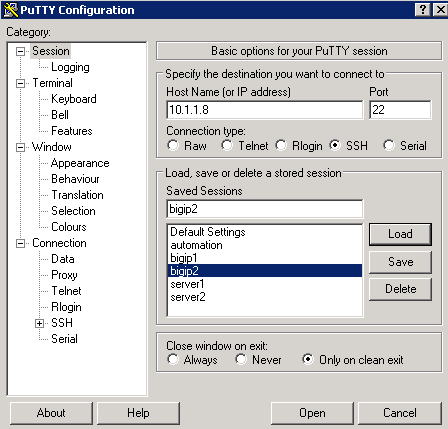
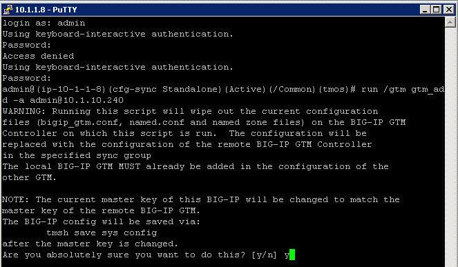
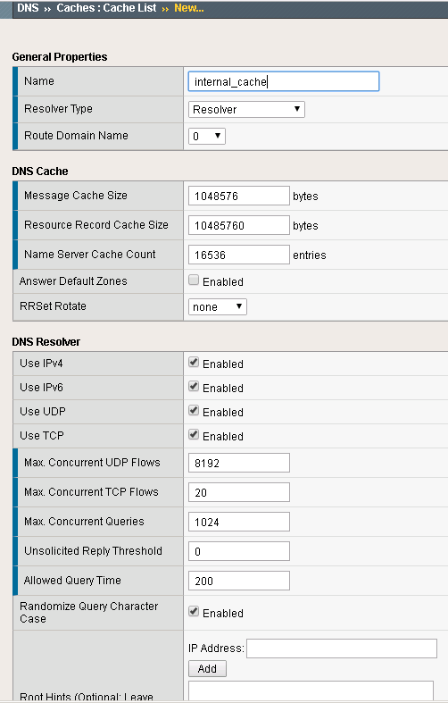
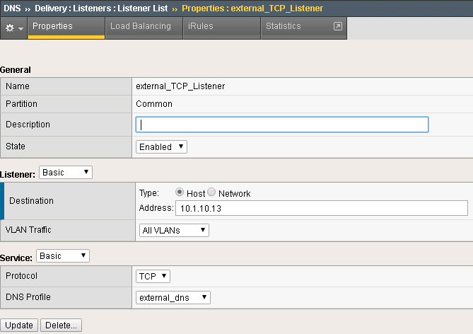
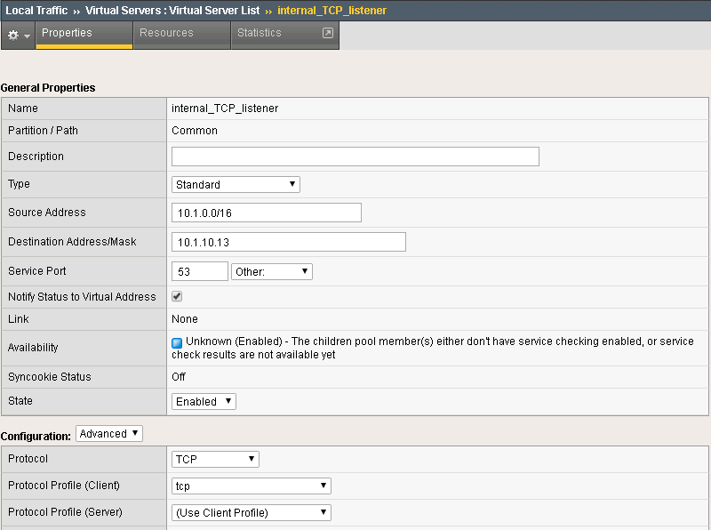
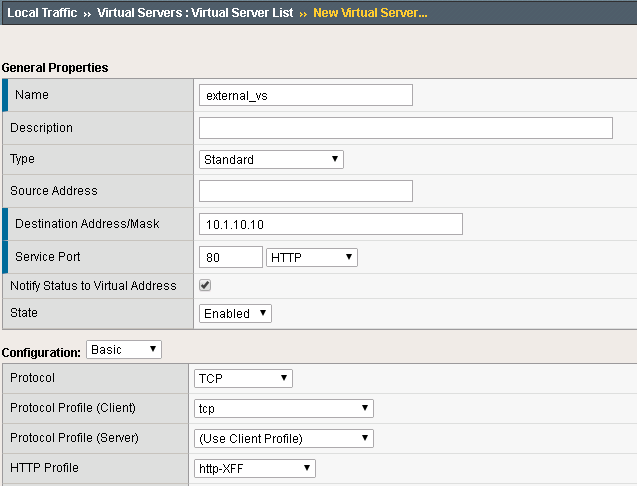
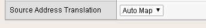
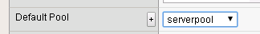

Creating BIG-IP DNS Sync Group¶
The following is adapted from the official F5 documentation:
First start by launching Google Chrome.

In Chrome you should see links to BIG-IP 1 and 2.

Login to BIG-IP 1 username: admin, password: admin

Take a look at the current config. You should see BIG-IP DNS is provisioned.

There is an existing self IP.

Configuring BIG-IP DNS¶
The following will go through the basic steps of setting up BIG-IP DNS.
First go to DNS -> Settings -> GSLB -> General
Find the “Synchronize” checkbox and click on it.

Next go back to DNS -> GSLB -> Data Centers
Create a Data Center (DC) named SUBNET_10 and SUBNET_30.

Next go to DNS->GSLB->Servers
Create a server bigip1 associated with SUBNET_10 and bigip2 associated with SUBNET_30.
| Name | Address | Data Center |
|---|---|---|
| bigip1 | 10.1.10.240 | SUBNET_10 |
| bigip2 | 10.1.30.240 | SUBNET_30 |
{kind=link}
At this point BIG-IP 1 has the desired BIG-IP DNS configuration, but it needs to be synced with BIG-IP 2.
From the Desktop launch “Putty”.

Find the BIG-IP 2 login.
{kind=link}
Login. username: admin, password: admin

Run the command:
run /gtm gtm_add -a admin@10.1.10.240

When prompted confirm/enter password.
{kind=link}
In Chrome login to BIG-IP 2 and you should see that it is now synced.

You should have a pair of BIG-IP devices that are in a DNS Sync Group. The next lab will go through the process of scripting these actions.
Optional Exercises¶
The full automation will also perform the following.
DNS Cache¶
In the Demo environment we will use BIG-IP DNS as a DNS resolver. Create a DNS cache named “dns_cache”.
DNS Profiles¶
Two DNS profiles are required. One for providing a resolving DNS server and one for external DNS requests (bad idea to have an open resolver on the internet). Now create them on both BIG-IP’s.
Under DNS -> Delivery -> Profiles -> DNS: Create a profile named “external_dns” that only provides GSLB and disables fallback to BIND.

Under DNS -> Caches -> Cache List: Create a DNS cache profile “internal_cache” and accept default values.
{kind=link}
Under DNS -> Delivery -> Profiles -> DNS: Create a profile named “internal_dns” that enables a DNS cache for resolving names.

DNS Listeners¶
For external DNS we have two listeners for each BIG-IP. One TCP and one UDP. First create on both BIG-IP’s the external Listeners for TCP and UDP. Apply the external_dns profile to each. Use these IP addresses:
| Name | Address | Port |
|---|---|---|
| bigip1 | 10.1.10.13 | 53 |
| bigip2 | 10.1.30.13 | 53 |
DNS -> Delivery -> Listeners Here the external TCP listener
{kind=link}
Here the external UDP listener

Next go to LTM Virtual server menu. The external listeners will apper as virtual servers.

Next create on each BIG-IP internal listeners via the LTM menu. The listener is a virtual server. Specify following source address range on each internal listener: 10.1.0.0/16 and apply the “internal_dns” DNS profile. Keep all other settings as default. Use these IP addresses:
| Name | Address | Port |
|---|---|---|
| bigip1 | 10.1.10.13 | 53 |
| bigip2 | 10.1.30.13 | 53 |
Create listeners for TCP and UDP Here is an example of the internal TCP Listener:
{kind=link}
LTM Configuration¶
Now we have to configure the LTM sectiopn of both BIG-IP’s. Since both BIG-IP’s are standalone the configuration steps has to be applied to both BIG-IP’s.
First create an http profile named “http-XFF” that inserts X-Forwarded-For headers Local Traffic -> Profiles -> Services -> HTTP

In the Demo LTM is configured to use cookie persistence, insert X-Forwarded-For headers, and use Priority Groups for delivering traffic.
Pools
Create a pool “serverpool” on each BIG-IP. Local Traffic -> Pools
Assign HTTP and TCP monitors Enable Priority Group Activation with “1 Available Member”
| Device | Pool Member #1 | Port | Priority Group | Pool Member #2 | Port | Priority Group |
|---|---|---|---|---|---|---|
| bigip1 | 10.1.240.10 | 80 | 10 | 10.1.250.10 | 80 | 0 |
| bigip2 | 10.1.250.10 | 80 | 10 | 10.1.240.10 | 80 | 0 |
Pool config example:

Virtual Servers
In the next step create two standard TCP virtual servers per BIG-IP. One external and one internal. Apply the http-XFF profile, SNAT Automap and the pool “serverpool”
Use following IP addresses
| Device | Name | Address | Port |
|---|---|---|---|
| bigip1 | external_vs | 10.1.10.10 | 80 |
| bigip1 | internal_vs | 10.1.10.100 | 80 |
| bigip2 | external_vs | 10.1.30.10 | 80 |
| bigip2 | internal_vs | 10.1.30.100 | 80 |
Here a configuration example:
  {kind=link}
{kind=link}
{kind=link}
DNS Topology¶
The Demo makes use of DNS Topology to provide split-DNS and also provide traffic affinity to adjacent resources.
Regions
| Name | Subnets |
|---|---|
| internal_network | 10.1.240.0/24 |
| region_1 | 10.1.10.0/24,10.1.240.0/24 |
| region_2 | 10.1.30.0/24,10.1.250.0/24 |
Records
| Source | is/is not | Destination |
|---|---|---|
| region /Common/internal_network | is not | pool /Common/external_pool |
| region /Common/internal_network | is | pool /Common/internal_pool |
| region /Common/region_1 | is | region /Common/region_1 |
| region /Common/region_2 | is | region /Common/region_2 |
DNS Configuration¶
Virtual Servers
| Device | Name | IP:PORT |
|---|---|---|
| bigip1 | external_vs | 10.1.10.10:80 |
| bigip1 | internal_vs | 10.1.10.100:80 |
| bigip2 | external_vs | 10.1.30.10:80 |
| bigip2 | internal_vs | 10.1.30.100:80 |
Pools
These are configured with LB of Topology/Round-Robin
| Name | Pool Members |
|---|---|
| external_pool | bigip1:external_vs, bigip2:external_vs |
| internal_pool | bigip1:internal_vs, bigip2:internal_vs |
Wide IPs
These are configured with LB of Topology
| Name | Pools | Last Resort pool |
|---|---|---|
| www.f5demo.com | external_pool, internal_pool | external_pool |